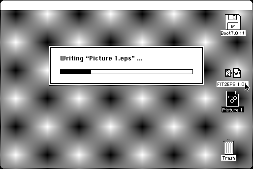

Download
FIT2EPS_1.0.1.zip (12K) FIT2EPS 1.01 repackaged into a zipped hfs disk image and checksum file. The disk image can be mounted with Mini vMac.
FIT2EPS_1.0.1.hqx (16K) FIT2EPS 1.01 in the original format.
copyright: Takahiro Sumiya
mod date: Aug 22, 1993
license: freeware
last known url
(gone)
Converts “Pict file into EPS file.” Requires “System 7”.

If you find these downloads useful, please consider helping the Gryphel Project, which hosts them.
Here are the md5 checksums for the downloads, signed with Gryphel Key 5:
--------- GRY SIGNED TEXT --------- 52ce117bae8dac4f648e0c743252e777 FIT2EPS_1.0.1.zip 3c57dbccbb9be133dc06c38ca12b3eab FIT2EPS_1.0.1.hqx ------- BEGIN GRY SIGNATURE ------- Gry/4Xa8CFcUzxdN/JPXuH/EUpxmfsZW9uyOExoH6tCU+ZaIrHmrJDiu6y0r2fhv y2I4pq3syxGSYcO/npIFWEi4oJuyYYk2dRt8hQGDSSuDavEulP5yU867uTTLjmDP j6n9D5O9hOqnp1yTWZnlDdVaSKc0MXJcYXay9NV2vAFidfLmXkxi8cuf0sxpTvvh -------- END GRY SIGNATURE --------